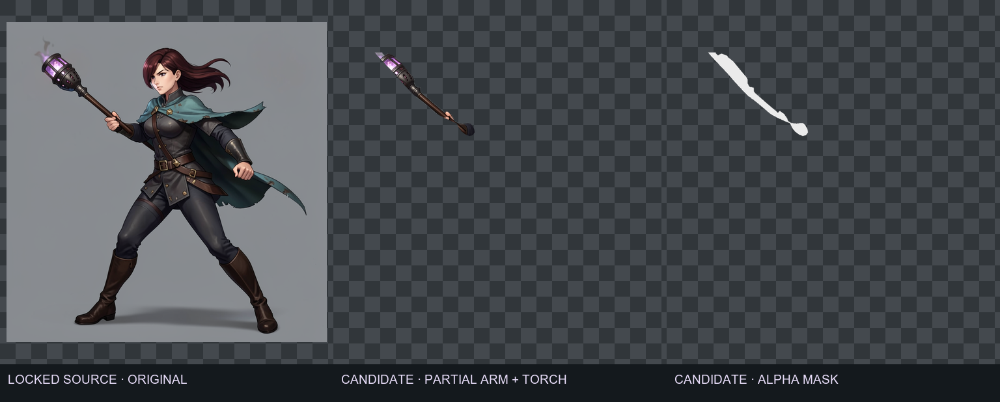
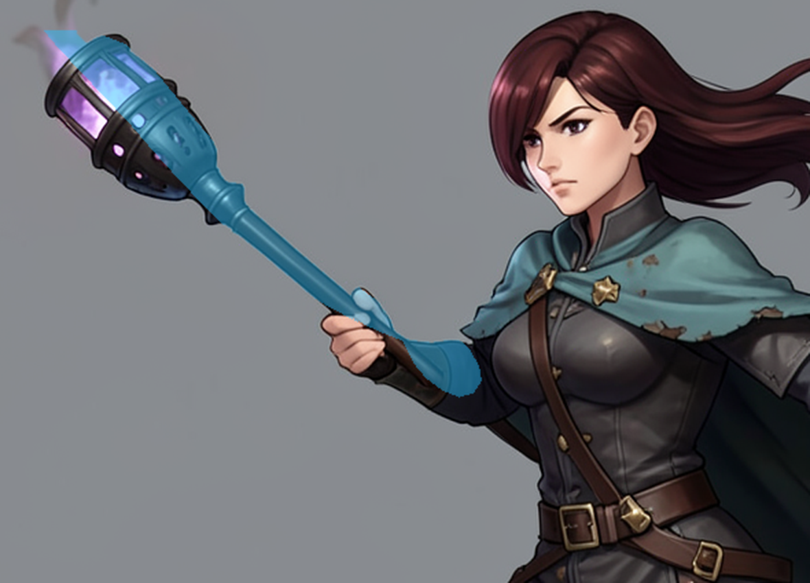
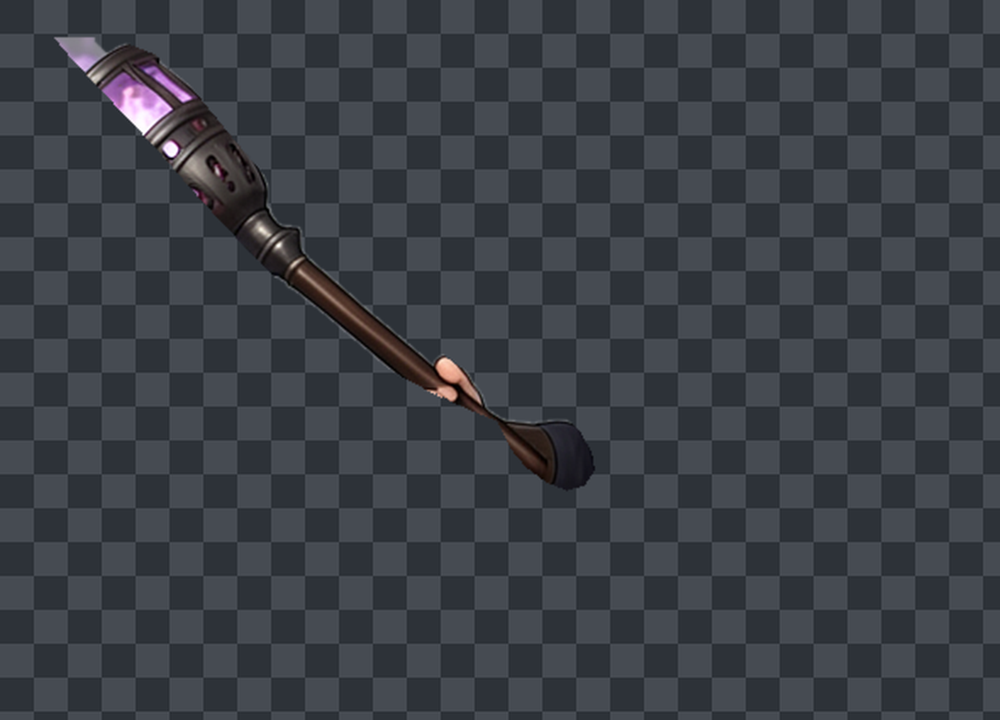
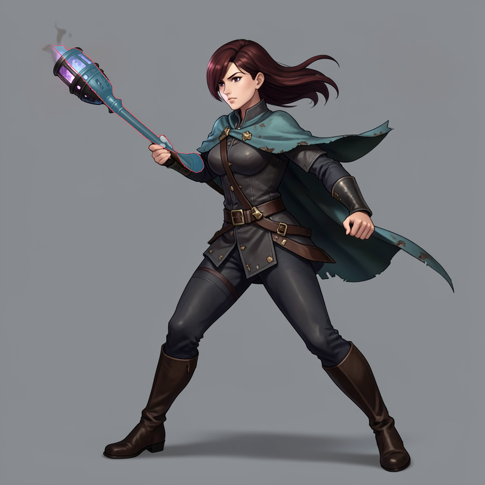

Torch pose · layered-source extraction review
Draft only — not a usable rig. The broad torso/cape mask contamination was removed. Current extraction retains the staff, torch, painted grip, and a partial sleeve; its blunt sleeve termination has no valid shoulder pivot or repaired body plate.
Source image is kept unchanged. Layer candidate is hidden by default in the OpenRaster file; the visible layer and merged preview remain the original full pose. Review images expose defects rather than implying approval.
Source / extraction / alpha mask

Mask coverage on source

Transparent-edge review

Full-source mask overlay

Layered interchange file
OpenRaster draft (.ora)
Layer manifest / provenance · Build hashes
Candidate layer: hidden by default. Original pose: visible, locked reference.
Human art gate
- Author a hand-clean shoulder/sleeve separation and separate body plate.
- Separate lantern plume/smoke; review staff and hand ownership.
- Approve the pivot, then test overlap and motion at game scale.